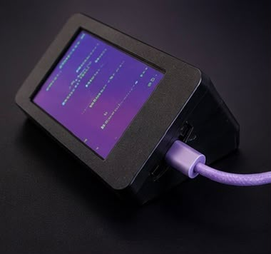
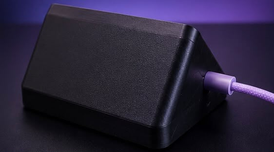

From unboxing to pushing your first macro — here's how it all works.
Buy one pre-assembled — R1,099 shipped in SA. Comes with E32R28T CYD, 3D-printed enclosure, USB-C cable, and firmware pre-flashed. Plug it in and you're ready.

Or build your own — get a CYD (ESP32-2432S028R or E32R28T from Robotics.org.za for R342.70). 3D-print your own enclosure, flash the firmware, and assemble.
If you bought a pre-assembled SudoDeck, the latest firmware is already installed — skip to step 3.
For DIY builds: your CYD comes with factory demo software. Replace it with SudoDeck by entering flash mode: hold the BOOT button, tap RESET, release BOOT — the screen goes blank. Then use the firmware tool on the Configure page.
Go to Firmware ToolAfter flashing, the CYD boots into SudoDeck. Leave it plugged into USB (this powers the board and provides a data connection). Click Connect on the Configure page — your browser will ask which serial port to use.

Go to ConfigureOnce connected, the config tool reads your current layout from the device. Add pages, place buttons on the grid, pick colors, and assign actions (keyboard keys, media controls, text snippets, or combos). Hit Write to save to the CYD's flash.
Unplug the USB (or keep it plugged for power — your choice). The CYD runs on USB power. Open Bluetooth settings on your computer, phone, or tablet. Look for SudoDeck in the device list and pair. Pair once, it stays paired.
That's it. Push a button on the CYD — your macro fires on the paired device. Navigate pages, trigger combos, type snippets. After a period of inactivity (configurable in the config tool), the screensaver kicks in with your chosen mode.
Three screensaver modes are built in: Matrix Rain, F1 Standings (live driver + constructor standings), and Custom Widgets — user-defined API endpoints displayed as live data cards.
To use live data modes (F1, Custom), first set up WiFi in the config tool layout controls. For custom widgets, add one or more widget sources below the Screensaver section:
btc.usd or current_weather.temperature. Array access with [index] is supported{value} placeholder, e.g. ${value} or {value}°CUse the Test button on each widget to verify your URL and path before writing to the device. Widgets cycle every 10s on the CYD display with page-dot navigation.